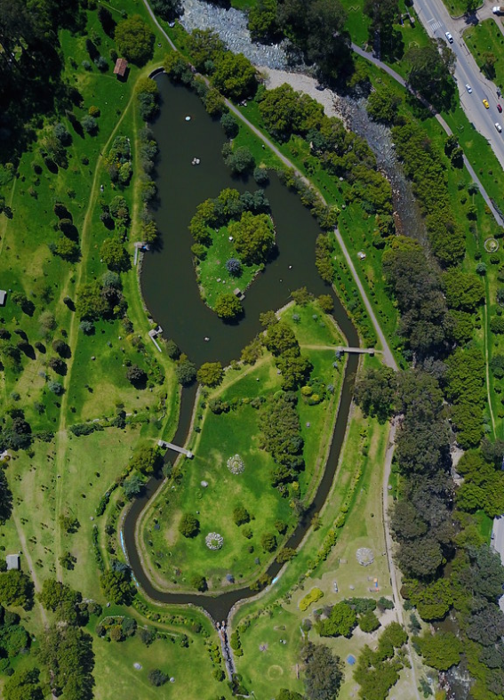
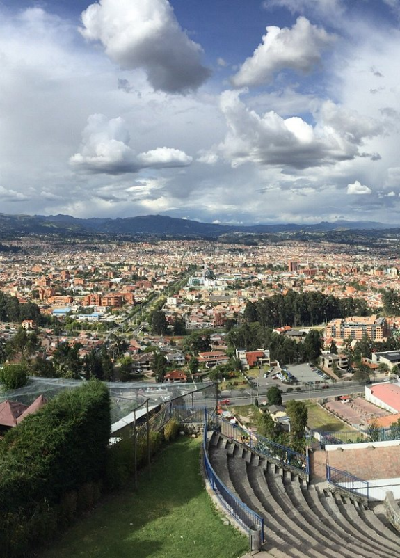
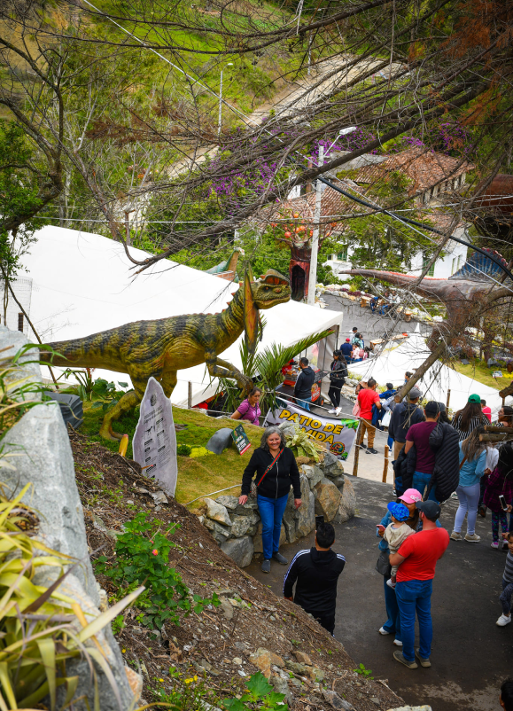
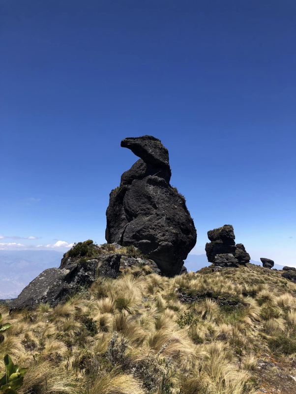
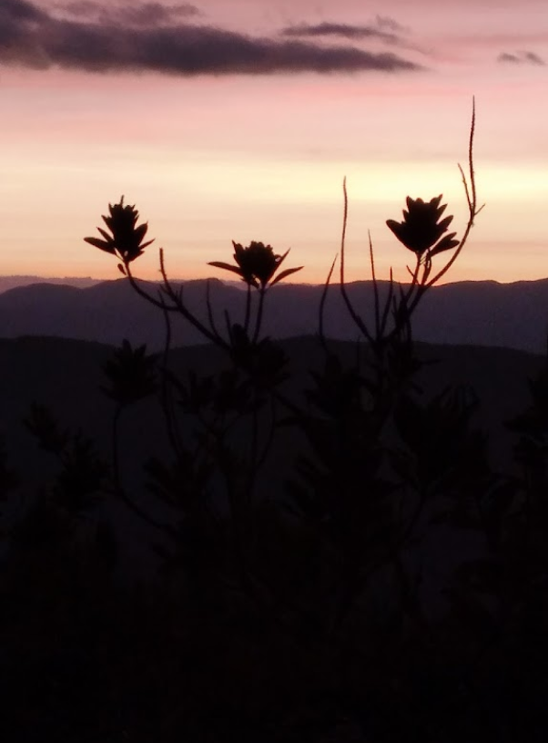
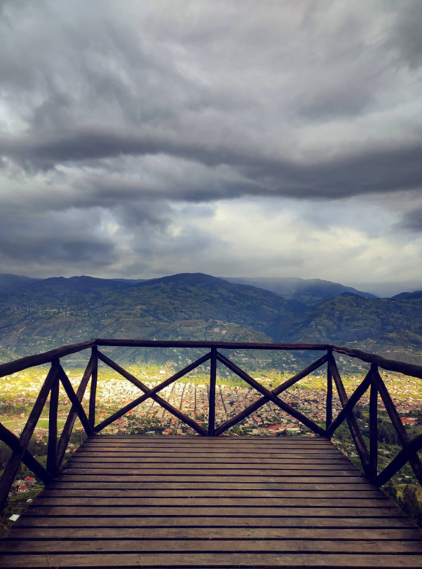
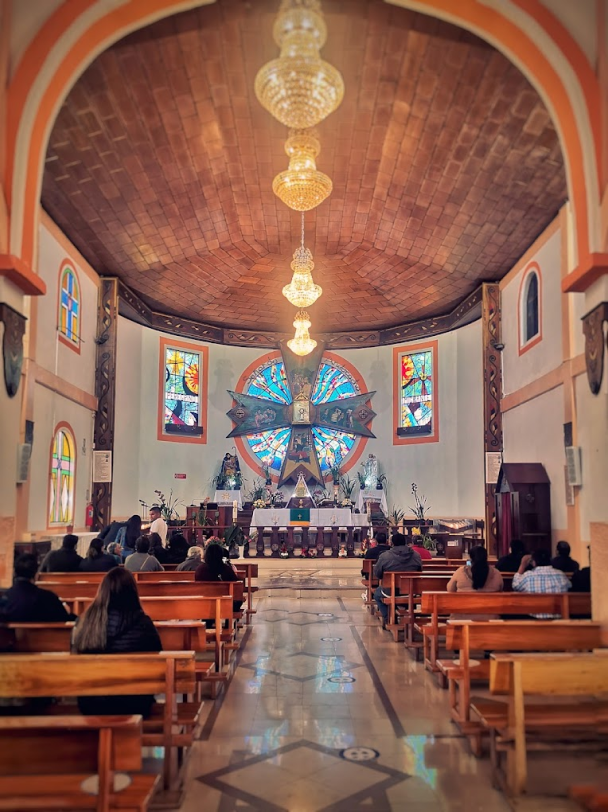
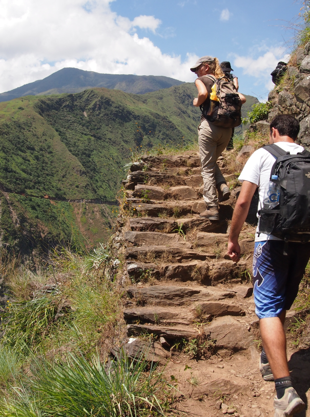
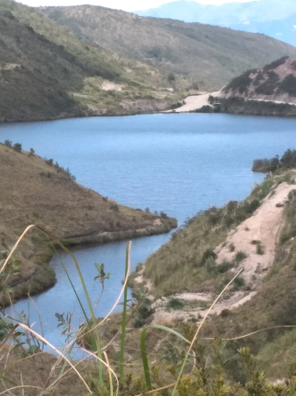

Ubicado en la ciudad de Cuenca, Ecuador
al noroeste de la ciudad, en las faldas del cerro Amaru.
Cuenta con una extensión de 8 hectáreas;
fue fundado en 2000 por el biólogo José Entenza,
su objetivo es la conservación de especies
amenazadas nativas de Ecuador.
¿Qué puedes hacer en Amarú?

02. Parque El Paraíso, Cuenca
Está ubicado en el sector de Baños,
al suroeste de la ciudad de Cuenca.
Fue inaugurado en el año 2002 y desde entonces
se ha convertido en uno de los parques
más visitados de la ciudad, dentro del parque se encuentran canchas deportivas, juegos infantiles,
anfiteatro al aire libre, capilla para eventos,
senderos para caminar y pedalear.
¿Qué puedes hacer en el Parque el Paraíso?

03. Mirador de Turi, Cuenca
El Mirador de Turi es un destino imperdible
para aquellos que visitan la hermosa ciudad de Cuenca,
situada en el corazón de los Andes ecuatorianos.
Este mirador ofrece una vista panorámica incomparable
de la ciudad colonial, que se extiende majestuosamente
a lo largo de las laderas de las montañas.
¿Qué puedes hacer en el Mirador de Turi?

04. Jurassic Paute, Paute
Jurassic Paute es un parque temático basado en
dinosaurios ubicado en el cantón de Paute,
provincia del Azuay. Fue inaugurado en el año 2015;
con el objetivo de ofrecer un lugar de
entretenimiento familiar con temática de dinosaurios.
El parque cuenta con 60 dinosaurios animatrónicos a
tamaño real distribuidos en un terreno de 5
hectáreas con áreas verdes y lagunas.
¿Qué puedes hacer en Jurassic Paute?

05. Las Caras de Huasipamba, Santa Isabel
Huasipamba es una comunidad rural ubicada en el
cantón Santa Isabel a la provincia del Azuay,
el atractivo turístico más destacable
son “Las Caras de Huasipamba” que forman parte
del complejo Arqueológico de Huasipamba; su clima es templado
y se organiza una fiesta anual en agosto en
honor a la Virgen de la Nube.
¿Qué puedes hacer en Huasipamba?

06. La Tranca, Chordeleg
La Tranca Delegsol es un sitio natural y punto
turístico ubicado en las afueras del
cantón Chordeleg, en la provincia del Azuay.
Es muy atractivo, con otros farallones
y vistas panorámicas del Valle de Yunguilla.
La Tranca hace referencia a la forma de
puerta o ventana que tiene la roca.
Mientras que "Delegsol" es una contracción de
Chordeleg y el Sol, en referencia a una leyenda
sobre el sol que se oculta detrás de esta formación rocosa.
¿Qué puedes hacer en la Tranca, Chordeleg?

07. Mirador Yaburn, Gualaceo
El Mirador Yaburn es un sitio natural y
punto de observación ubicado cerca del cantón Gualaceo,
en la provincia del Azuay, está ubicado específicamente
en las faldas del cerro Yaburn. Desde el mirador,
a una altura de unos 2.800 msnm, se tiene una espectacular
vista panorámica de Gualaceo y del valle circundante.
¿Qué puedes hacer en el Mirador Yaburn, Gualaceo

08. Andacoha, Guachapala
El Santuario de Andacocha es un área protegida,
destino ecoturístico y religioso, ubicado en el cantón Guachapala, provincia del Azuay, se destaca por
las peregrinaciones de devotos que genera año tras año,
tradición que inicia hace 50 años aproximadamente y
que en la actualidad genera visitas de hasta
20.000 devotos en el período del 13 al 15 de septiembre.
¿Qué puedes hacer en Andacocha?

09. Camino del Inca, Oña
El Camino del Inca ubicado cerca de Oña en la
parroquia San Felipe en la provincia del Azuay.
Es un antiguo sendero que era parte del camino
incaico o red vial del Imperio Incaico.
En algunos tramos del camino todavía pueden
verse empedrados y pisadas en roca talladas por los
propios incas hace cientos de años. Comprende un trayecto
de 9 km que une las ruinas arqueológicas incaicas de
Ingapirca y Tambo Viejo. Recorría desde el norte
de Chile hasta el sur de Colombia.
¿Qué puedes hacer en el Camino del Inca?

10. Laguna Curiquingue, Nabón
La Laguna de Curiquingue es una laguna de origen glaciar ubicada en las cercanías del cantón Nabón,
provincia del Azuay. Se ubica a unos 3,300 metros
sobre el nivel del mar, en los páramos de la
Cordillera Oriental de los Andes, Es una laguna
poco intervenida por el hombre, por lo que mantiene
su estado natural. Es ideal para la contemplación
del paisaje y la fotografía de naturaleza.